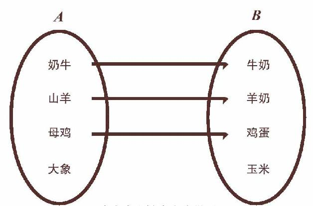
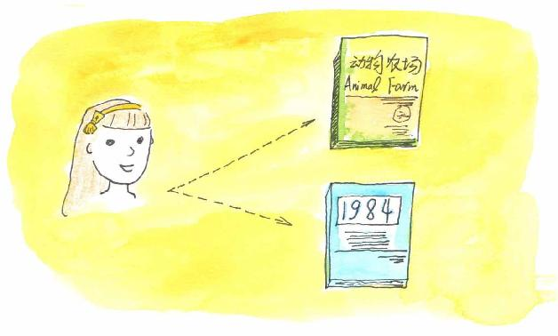
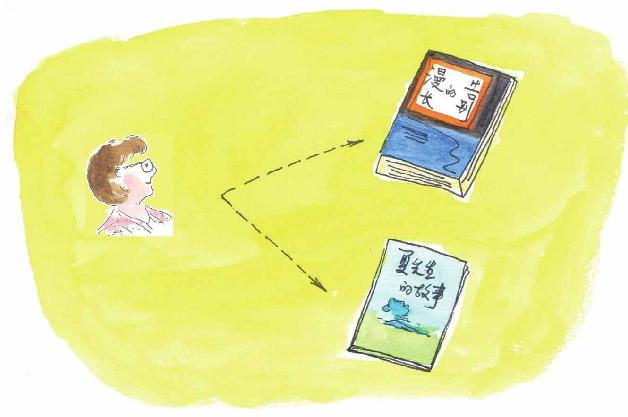

“关系”一词是如此具有中国特色，以至于被收入《牛津英语词典》。
但什么是“关系”？在中国人看来，很多时候是只能意会不能言传的。
大约50年前，科德从数学角度给出了“关系”的严格定义。在了解科德的理论之前，我们先看看一个例子，我们都知道母鸡产鸡蛋，奶牛产牛奶，那么我们来看下面两个集合：
A={奶牛、山羊、母鸡、大象}，
B={牛奶、羊奶、鸡蛋、玉米}。
观察后，我们可以看到这两个集合中一些元素之间可以建立一种关系，即构成一个“什么”产“什么”的关系。
奶牛产牛奶，山羊产羊奶，母鸡下鸡蛋，所以〈奶牛，牛奶〉、〈山羊、羊奶〉、〈母鸡、鸡蛋〉都属于这个生产者和被生产者的关系。
因为“大象”不产“玉米”，所以〈大象，玉米〉是不属于这个关系的。
在这个例子中，〈母鸡，鸡蛋〉表示的含义是“母鸡产鸡蛋”，因此〈母鸡，鸡蛋〉≠〈鸡蛋，母鸡〉就不难理解了。
下面这个图可以比较直观地表示这个生产者和被生产者的关系：

生产者和被生产者关系
再比如，我们前几天到图书馆去各借了两本书，你借的是《动物农场》和《1984》，我借的是《漫长的告别》和《夏先生的故事》，这时我们两个人和图书馆的这四本书就构成一个借阅关系：


你们班考了数学，班上的同学拿到自己的分数，这时，你们班的每个人就和这些分数之间构成一个考生与分数的关系，你说对吗？
你到超市去购物，出来的时候，手里拿着一张POS机上打出的购物小票，这其实就记载了这次购物的过程中你与“超市商品”的关系。
这样的例子还有很多，小文，如果我说“关系无处不在”，你同意吗？